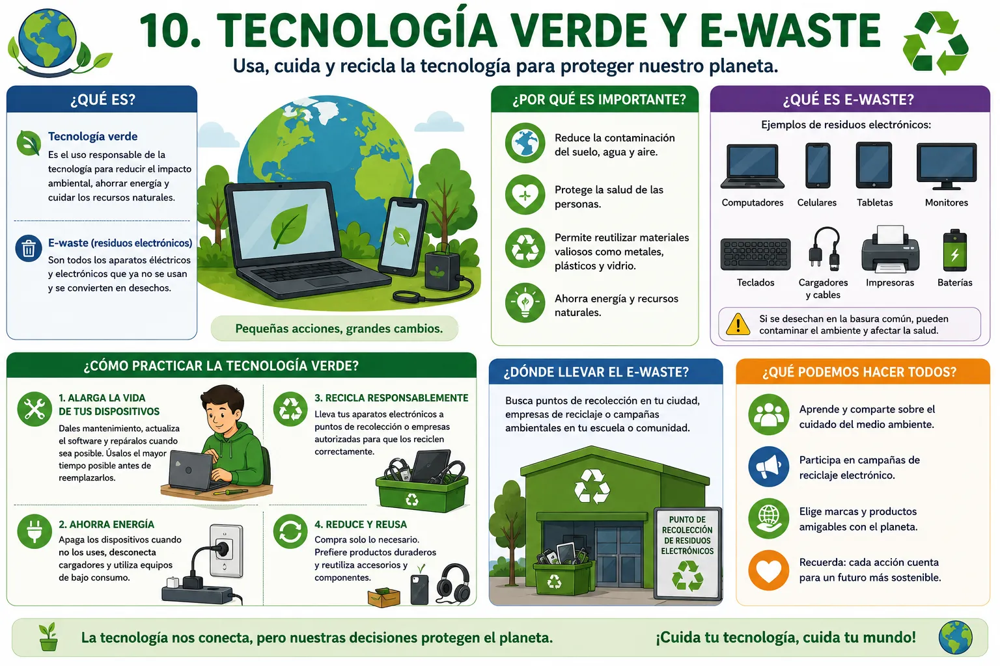

ARTÍCULO TÉCNICO
Tecnología verde y E-waste
Introducción
La tecnología forma parte de nuestra vida diaria y cada año aparecen nuevos computadores, celulares, tabletas, televisores y otros dispositivos electrónicos. Gracias a estos equipos podemos estudiar, trabajar, comunicarnos y acceder a una gran cantidad de información. Sin embargo, cuando un dispositivo deja de funcionar o es reemplazado por uno más moderno, muchas personas no saben qué hacer con él y terminan desechándolo de manera inadecuada. Esto genera un problema ambiental conocido como residuos electrónicos o E-waste, que cada día aumenta en diferentes partes del mundo.

Los residuos electrónicos están formados por todos aquellos aparatos eléctricos y electrónicos que ya no se utilizan porque están dañados, son muy antiguos o fueron reemplazados por otros nuevos. Entre ellos se encuentran computadores, celulares, impresoras, teclados, monitores, cargadores, cables, baterías, televisores y muchos otros dispositivos. Aunque algunos de estos equipos parecen basura común, contienen materiales que pueden ser reutilizados, pero también sustancias que pueden ser peligrosas para el medio ambiente si no reciben un tratamiento adecuado.
Uno de los principales problemas del E-waste es que muchas personas arrojan estos aparatos junto con la basura doméstica. Cuando esto ocurre, algunos materiales pueden contaminar el suelo, el agua y el aire. Además, las baterías y otros componentes contienen sustancias que pueden afectar el medio ambiente y representar un riesgo para la salud de las personas si no son manejadas correctamente. Por esta razón, es importante separar los residuos electrónicos de los demás desechos y llevarlos a lugares autorizados para su recolección.
La tecnología verde busca disminuir el impacto ambiental que produce el uso de los equipos electrónicos. Su objetivo es promover el cuidado del medio ambiente mediante el uso responsable de la tecnología, el ahorro de energía y el reciclaje de los dispositivos cuando terminan su vida útil. También busca que las empresas fabriquen equipos más eficientes, que consuman menos electricidad y que sean más fáciles de reparar o reciclar.
Una de las mejores formas de contribuir con la tecnología verde es prolongar la vida útil de los dispositivos electrónicos. Muchas veces un computador o un celular puede seguir funcionando
correctamente si recibe mantenimiento, se reemplaza alguna pieza o se actualiza el software. Antes de comprar un equipo nuevo, es recomendable verificar si el que ya tenemos todavía puede utilizarse. De esta manera se reduce la cantidad de residuos electrónicos que se generan cada año.
El reciclaje de equipos electrónicos también desempeña un papel muy importante. Existen empresas y programas especializados que reciben computadores, celulares, baterías y otros dispositivos para separar sus materiales y aprovechar aquellos que pueden volver a utilizarse. Gracias a este proceso es posible recuperar metales, plásticos y otros componentes que sirven para fabricar nuevos productos, disminuyendo así la extracción de recursos naturales y reduciendo la contaminación ambiental.
Además del reciclaje, cada persona puede adoptar pequeños hábitos que ayudan a cuidar el medio ambiente. Por ejemplo, apagar el computador cuando no se está utilizando, desconectar los cargadores cuando ya no están en uso, reducir el consumo de papel mediante documentos digitales y utilizar equipos con bajo consumo de energía. Aunque estas acciones parecen sencillas, cuando muchas personas las practican contribuyen de manera importante a la protección del planeta.
Las instituciones educativas también cumplen un papel fundamental en la promoción de la tecnología verde. A través de campañas de reciclaje, actividades ambientales y programas de educación digital, los estudiantes pueden aprender la importancia de cuidar los dispositivos electrónicos y desecharlos de manera responsable. Estos conocimientos permiten formar personas más conscientes del impacto que tiene la tecnología sobre el medio ambiente.
El compromiso con el cuidado del planeta depende de la participación de todos. Los fabricantes pueden producir equipos más sostenibles, las empresas pueden implementar programas de reciclaje y los usuarios pueden hacer un uso más responsable de los dispositivos electrónicos. Cuando cada persona aporta con pequeñas acciones, es posible disminuir la cantidad de residuos electrónicos y aprovechar mejor los recursos disponibles.
En conclusión, la tecnología verde y el manejo adecuado del E-waste son fundamentales para proteger el medio ambiente y garantizar un uso responsable de la tecnología. Separar correctamente los residuos electrónicos, reciclar los equipos que ya no funcionan, prolongar la vida útil de los dispositivos y ahorrar energía son acciones sencillas que benefician tanto a las personas como al planeta. Adoptar estos hábitos permite construir un futuro más sostenible, donde la tecnología continúe mejorando nuestra calidad de vida sin afectar los recursos naturales ni el entorno que nos rodea.